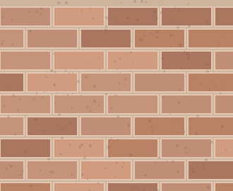
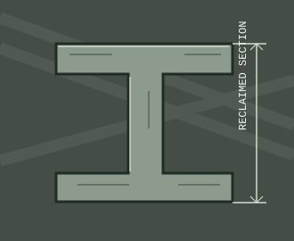
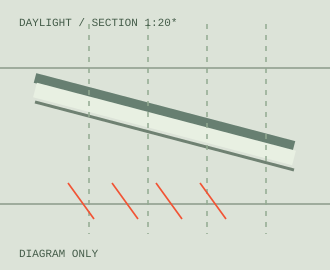

MATERIALS
HAVE MEMORY.
Reuse starts with noticing. Three illustrated material studies consider what remains, what can change and what new use might grow from what is already there.
Brick records
the passage
of time.
Existing brickwork offers more than an enclosure. Its bonds, wear and colour variation connect a building to its context and its history. A careful intervention begins by understanding that character.

Keep the
structure.
Change the use.
A retained steel frame can organise a new programme without disguising the building's industrial past. Reuse requires assessment, but the design opportunity begins with curiosity.

Light is
a way to
make room.
Daylight can bring an old, deep-plan building back to life. Rooflights and translucent infill are considered as deliberate new layers, clearly distinguishable from the retained structure.

THE MOST SUSTAINABLE GESTURE MAY BE THE DECISION TO LOOK AGAIN.EXPLORE THE COMMONS ↗